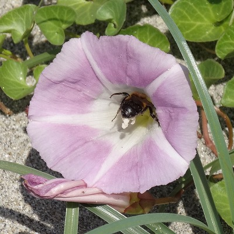
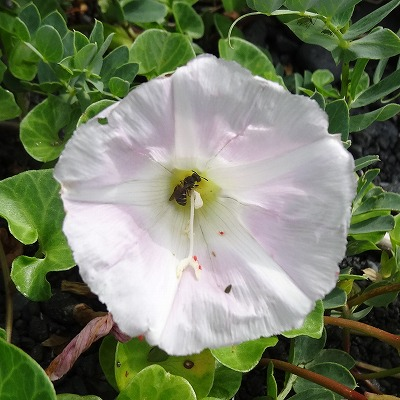
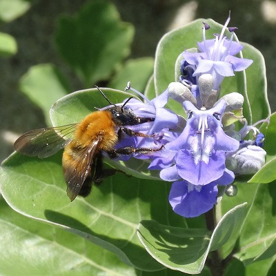
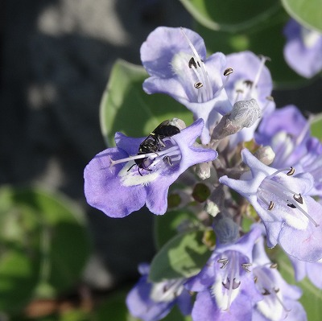

マルハナバチやチョウなどの長口吻送粉者の減少は植物群集にどのような影響を与えるのか？
近年、世界的にマルハナバチ類やチョウ類などの長い口吻をもつ送粉者が、人間活動などにより世界的に減少しています。一般に長口吻送粉者は長い花筒をもつ植物と相互作用しているといわれており、植物への影響が危惧されます。本研究では、長口吻送粉者が少ない伊豆諸島（海洋島）と本州の海浜植物群集を比較し、長口吻送粉者の不在が送粉ネットワークをどのように変化させ、植物の繁殖成功に影響を与えるのか調べました。その結果、長口吻送粉者の不在は、短口吻送粉者の長花筒植物への訪花を促進し、ネットワークレベルの花と昆虫の形態のミスマッチを起こすことが明らかになりました。また、形態のミスマッチに伴い、植物群集全般の送粉成功が低下することが示唆されました。
 本州のハマヒルガオ |
 伊豆諸島のハマヒルガオ |
 本州のハマゴウ |
 伊豆諸島のハマゴウ |
ディープラーニングによる自動同定・計数、インターバルカメラ、環境DNA、駆除されたスズメバチの巣を活用したモニタリング
多種多個体から構成される生物群集の調査は多大な労力を要します。そこで、ディープラーニングを用いて画像から自動同定・計数を行う技術の開発に取り組んでいます。また、環境DNAやメタバーコーディングなどの研究者と連携し、汲んだ水や駆除されたスズメバチの巣を活用した生物多様性モニタリング手法の検討にも取り組んでいます。
関連論文：